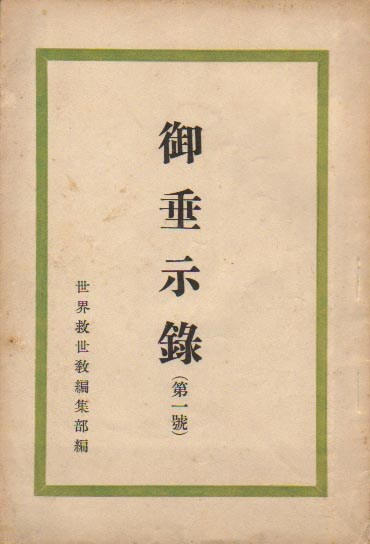

――― 岡
田 自 観 師 の 論 文 集 ――発行誌別
御垂示録（第一号～第三十号)
 |
御垂示録（第１号） 昭和26年 9月15日発行 B６版 編 集 世界救世教編集部 発行人 阿部 晴三 発行所 世界救世教出版部 資格者のみ出席の特別御面会時の速記録 資格者のみ御下付 |
||
|
|||
| ＮＯ． | 発行年月日 | 収 録 内 容 | 岡田茂吉全集 |
| 第６号 | S27. 1.25 | S26年 4月～7月の特別御面会記録。 | 講話篇 4- 31 |
| 第１号 | S26. 9.15 | S26年 8月1･5･8日の特別御面会記録。 | 講話篇 4- 76 |
| 第２号 | S26.10.10 | S26年 9月1･5･8日の特別御面会記録。 | 講話篇 4-118 |
| 第３号 | S26.11.25 | S26年10月1･5･8日の特別御面会記録。 | 講話篇 4-181 |
| 第４号 | S26.12.10 | S26年11月1･5･8日の特別御面会記録。 | 講話篇 4-251 |
| 第５号 | S26.12.25 | S26年12月1･5･8日の特別御面会記録。 | 講話篇 4-336 |
| 第７号 | S27. 3.10 | S27年 1・2月の特別御面会記録。 | 講話篇 6- 7 |
| 第８号 | S27. 4.25 | S27年 3・4月1日の特別御面会記録。 | 講話篇 6- 41 |
| 第９号 | S27. 5.15 | S27年 5月1日の特別御面会記録。 | 講話篇 6-103 |
| 第10号 | S27. 6.15 | S27年 6月1日の特別御面会記録。 | 講話篇 6-132 |
| 第11号 | S27. 7.15 | S27年 7月1日の特別御面会記録。 | 講話篇 6-163 |
| 第12号 | S27. 8.25 | S27年 8月1日の特別御面会記録。 | 講話篇 6-195 |
| 第13号 | S27. 9.25 | S27年 9月1日の特別御面会記録。 | 講話篇 6-231 |
| 第14号 | S27.10.15 | S27年10月1日の特別御面会記録。 | 講話篇 6-263 |
| 第15号 | S27.11.15 | S27年11月1日の特別御面会記録。 | 講話篇 6-287 |
| 第16号 | S27.12.15 | S27年12月1日の特別御面会記録。 | 講話篇 6-306 |
| 第17号 | S28. 2.15 | S28年 2月1日の特別御面会記録。 | 講話篇 9- 7 |
| 第18号 | S28. 3.15 | S28年 3月1日の特別御面会記録。 | 講話篇 9- 35 |
| 第19号 | S28. 4.15 | S28年 4月1日の特別御面会記録。 | 講話篇 9- 58 |
| 第20号 | S28. 5.15 | S28年 5月1日の特別御面会記録。 | 講話篇 9- 85 |
| 第21号 | S28. 6.15 | S28年 6月1日の特別御面会記録。 | 講話篇 9-116 |
| 第22号 | S28. 7.15 | S28年 7月1日の特別御面会記録。 | 講話篇 9-146 |
| 第23号 | S28. 8.15 | S28年 8月1日の特別御面会記録。 | 講話篇 9-171 |
| 第24号 | S28. 9.15 | S28年 9月1日の特別御面会記録。 | 講話篇 9-199 |
| 第25号 | S28.10.15 | S28年10月1日の特別御面会記録。 | 講話篇 9-225 |
| 第26号 | S28.11.15 | S28年11月1日の特別御面会記録。 | 講話篇 9-256 |
| 第27号 | S28.12.15 | S28年12月1日の特別御面会記録。 | 講話篇 9-279 |
| 第28号 | S29. 2.15 | S29年 2月1日の特別御面会記録。 | 講話篇12- 11 |
| 第29号 | S29. 3.15 | S29年 3月1日の特別御面会記録。 | 講話篇12- 39 |
| 第30号 | S29. 4.15 | S29年 4月1日の特別御面会記録。 | 講話篇12- 70 |